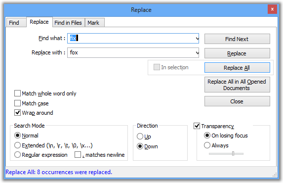

| Précédent: Recherche normale | Rechercher | Suivant: Rechercher dans les fichiers |

La boîte de dialogue Remplacer est un complément à la boîte de dialogue Rechercher. Les mêmes règles sont en vigueur, mais en plus, vous
remplacez le texte trouvé par un autre texte; un texte peut être remplacé par la chaîne vide pour être éliminé.
Le changement le plus important est qu'une nouvelle case à cocher Dans sélection s'applique à l'opération qui remplacera toutes les occurrences de la recherche avec le texte de remplacement. effectuera un Remplacer sur tous les documents qui sont actuellement ouverts dans Notepad++.
Pour effectuer un remplacement dans tous les fichiers d'un répertoire, voir Rechercher dans les fichiers.